가스기사 (2009-05-10 기출문제)
1과목: 가스유체역학
1. 펌프의 전효율 η를 구하는 식은? (단, ηm은 기계효율, ηv는 체적효율, ηh는 수력효율이다.)
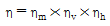
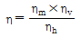
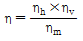
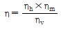
(정답률: 66%)

2. 질량 M, 길이 L, 시간 T로 압력의 차원을 나타낼 때 옳은 것은?
- MLT-2
- ML2T-2
- ML-1T-2
- ML2T-3
(정답률: 55%)
3. 비중 0.9인 유체를 10ton/h의 속도로 20m 높이의 저장 탱크에 수송한다. 지름이 일정한 관을 사용할 때 펌프가 유체에 가해준 일은 몇 ㎏f·m/㎏인가? (단, 마찰손실은 무시한다.)
- 10
- 20
- 30
- 40
(정답률: 57%)
4. 두 평판 사이에 유체가 있을 때 이동 평판을 일정한 속도 u로 운동시키는데 필요한 힘 F에 대한 설명으로 틀린 것은?
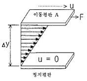
- 평판이 면적이 클수록 크다.
- 이동속도 u가 클수록 크다.
- 두 평판의 간격 Δy가 클수록 크다.
- 평판 사이에 점도가 큰 유체가 존재할수록 크다.
(정답률: 71%)
5. 유효흡입수두(NPSH, net positive suction head)를 옳게 나타낸 것은?
- NPSH＝임펠러의 고압부 전체수두
- NPSH＝펌프 흡입구에서의 전체수두
- NPSH＝임펠러의 고압부 전체수두 - 포화증기압 수두
- NPSH＝펌프 흡입구에서의 전체수두 - 포화증기압 수두
(정답률: 68%)
6. 원관 내 유체의 흐름에 대한 설명 중 틀린 것은?
- 일반적으로 층류는 레이놀드수가 약 2100 이하인 흐름이다.
- 일반적으로 난류는 레이놀드수가 약 4000 이상인 흐름이다.
- 일반적으로 관 중심부의 유속은 평균유속보다 크다.
- 일반적으로 최대속도에 대한 평균속도의 비는 난류가 층류보다 작다.
(정답률: 65%)
7. 등엔트로피 과정하에서 완전기체 중의 음속을 옳게 나타낸 것은? (단, E는 체적탄성계수, R은 기체상수, T는 기체의 절대온도, P는 압력, k는 비열비이다.)
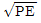
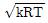
- RT
- PT
(정답률: 68%)
8. 어느 저수지의 표고가 50m이고, 양수발전을 위하여 표고 100m인 지점으로 초당 2m3의 물을 수송하고자할 때 필요한 펌프의 동력은 몇 PS인가? (단, 펌프의 출구와 입구의 관지름은 같고, 전손실 수두는 10m이다.)
- 100
- 1000
- 1300
- 1600
(정답률: 35%)
9. 20℃ 건조공기의 점성계수는 1.848×10-6㎏f·s/m2이다. 동점성계수를 구하면 약 몇 stokes인가? (단, 공기의 비중량은 1.2㎏f/m3이다.)
- 0.015
- 0.025
- 0.15
- 0.25
(정답률: 44%)
10. 제트기가 720km/h의 속도로 비행하고 있다. 이 제트기는 초당 100㎏의 공기를 흡입하여 240m/s의 속도로 배출을 시킨다. 이 제트기의 추진력은 몇 N 인가? (단, 연료의 무게는 무시한다.)
- 1000
- 2000
- 3000
- 4000
(정답률: 44%)
11. 수평으로 놓인 원관 속에서 유체가 흐를 때 층류 영역에서 마찰계수와 레이놀드수와의 함수 관계는?
- 마찰계수는 레이놀드수에 비례한다.
- 마찰계수는 레이놀드수에 반비례한다.
- 마찰계수는 레이놀드수의 제곱에 반비례한다.
- 마찰계수는 레이놀드수의 제곱에 비례한다.
(정답률: 50%)
12. 다음 중 Mach 수를 의미하는 것은?
- 실제유동속도/음속
- 초음속/아음속
- 음속/실제유동속도
- 아음속/초음속
(정답률: 69%)
13. 안지름이 10㎝인 원관을 통해 1시간에 10m3의 물을 수송하려고 한다. 이때 물의 평균유속은 약 몇 m/s이어야 하는가?
- 0.0027
- 0.0354
- 0.277
- 0.354
(정답률: 52%)
14. 수평 원관 내에서의 유체흐름을 설명하는 Hagen-Poiseuille 식을 얻기 위해 필요한 가정이 아닌 것은?
- 완전히 발달된 흐름
- 정상상태 흐름
- 충류
- 포텐셜 흐름
(정답률: 63%)
15. 15℃인 공기 속을 비행하는 물체의 마하각이 20°이면 물체의 속도는 약 몇 m/s인가? (단, 공기의 기체상수 R은 287J/㎏·K, 공기의 비열비는 1.4이다.)
- 340
- 568
- 995
- 1267
(정답률: 30%)
16. 왕복 펌프에 비해 소형이며 구조가 간단하고 맥동이 적으나 공기 바인딩 현상이 나타날 수 있는 펌프는?
- 피스톤 펌프
- 원심 펌프
- 제트 펌프
- 플랜지 펌프
(정답률: 46%)
17. 완전기체에 대한 설명으로 옳은 것은?
- 포화상태에 있는 포화 증기를 뜻한다.
- 완전기체의 상태 방정식을 만족시키는 기체이다.
- 체적 탄성계수가 100인 기체이다.
- 높은 압력하의 기체를 뜻한다.
(정답률: 66%)
18. 실제유체나 이상유체에 관계없이 모두 적용하는 것은?
- 질량보존의 법칙
- 수정계수
- 압축성 유체 가정
- 뉴튼의 점성법칙
(정답률: 60%)
19. 노점(dew point)에 대한 설명으로 틀린 것은?
- 건구온도보다 습구온도가 낮은 상태이다.
- 등압과정에서 응축이 시작되는 온도이다.
- 대기 중의 수증기의 분압이 그 온도에서 포화 수증기압과 같아지는 온도이다.
- 상대습도가 100%가 되는 온도이다.
(정답률: 50%)
20. 원심 펌프에서 발생하는 공동현상(Cavitation)에 대한 설명으로 옳은 것은?
- 흡입 압력이 액체의 증기압보다 높을 때 발생한다.
- 흡입 압력이 액체의 증기압보다 낮을 때 발생한다.
- 흡입 압력이 액체의 증기압과 같을 때 발생한다.
- 흡입 압력이 대기압보다 낮을 때 발생한다.
(정답률: 54%)
2과목: 연소공학
21. 열화학반응 시 온도변화의 열전도 범위에 비해 속도변화의 전도 범위가 크다는 것을 나타내는 무차원수는?
- 루이스 수(Lewis number)
- 러셀 수(Nesselt number)
- 프란틀 수(Prandtl number)
- 그라쇼프 수(Grashof number)
(정답률: 56%)
22. 기체연료의 연소속도에 대한 설명으로 틀린 것은?
- 보통의 탄화수소와 공기의 혼합기체 연소속도는 약 400~500㎝/s 정도로 매우 빠른 편이다.
- 연소속도는 가연한계 내에서 혼합기체의 농도에 영향을 크게 받는다.
- 연소속도는 메탄의 경우 당량비 농도 근처에서 최고가 된다.
- 혼합기체의 초기온도가 올라갈수록 연소속도도 빨라진다.
(정답률: 54%)
23. 조성이 C6H10O5인 어떤 물질 1.0kmol을 완전연소시킬 때 연소가스 중의 질소의 양은 약 몇 ㎏인가? (단, 공기 중의 산소는 23w%, 질소는 77w%이다.)
- 543
- 643
- 735
- 835
(정답률: 59%)
24. 고온으로 가열된 코크스에 수증기를 작용시켜서 얻는 CO 와 H2가 주성분인 가스는?
- 발생로가스
- 수성가스
- 오프가스
- 수소가스
(정답률: 75%)
25. 연소범위에 대한 일반적인 설명으로 틀린 것은?
- 압력이 높아지면 연소범위는 넓어진다.
- 온도가 올라가면 연소범위는 넓어진다.
- 산소농도가 증가하면 연소범위는 넓어진다.
- 불활성가스의 양이 증가하면 연소범위는 넓어진다.
(정답률: 73%)
26. 에탄 5Nm3을 완전연소시킬 때 필요한 이론공기량 중 N2의 양은 약 몇 Nm3인가?
- 46
- 66
- 83
- 103
(정답률: 60%)
27. 어떤 연료를 분석한 결과 중량으로 탄소 75%, 수소 15%, 산소 8%, 황 2%이었다. 이 연료의 완전연소에 소요되는 이론산소량은 약 몇 ㎏-O2/㎏-연료 인가?
- 1.96
- 2.45
- 3.14
- 4.78
(정답률: 41%)
28. 다음 [보기]는 가스의 화재 중 어떤 화재에 해당하는가?
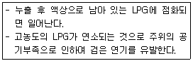
- 풀화재(pool fire)
- 제트화재(jet fire)
- 플래시화재(flash fire)
- 드래프트화재(draft fire)
(정답률: 64%)
29. 최소착화에너지(MIE)의 특징에 대한 설명으로 옳은 것은?
- 최소착화에너지는 압력증가에 따라 감소한다.
- 산소농도가 많아지면 최소착화에너지는 증가한다.
- 질소농도의 증가는 최소착화에너지를 감소시킨다.
- 일반적으로 분진의 최소착화에너지는 가연성가스보다 작다.
(정답률: 55%)
30. 다음 Otto cycle의 선도에서 열이 공급되는 과정은?
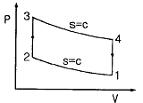
- 1→2
- 2→3
- 3→4
- 4→1
(정답률: 49%)
31. 과잉공기량이 지나치게 많을 때 나타나는 현상으로 틀린 것은?
- 연소실 온도 저하
- 연료 소비량 증가
- 배기가스 온도의 상승
- 배기가스에 의한 열손실 증가
(정답률: 52%)
32. 폭발등급은 안전간격에 따라 구분한다. 다음 중 안전간격이 가장 넓은 것은?
- 이황화탄소
- 수성가스
- 수소
- 프로판
(정답률: 52%)
33. 다음 중 폭발방호(Explosion Protection)의 대책이 아닌 것은?
- Venting
- Suppression
- Containment
- Adiabatic Compression
(정답률: 63%)
34. 이상기체의 성질에 대한 설명으로 틀린 것은?
- 보일·샤를의 법칙을 만족한다.
- 아보가드로의 법칙을 따른다.
- 비열비는 온도에 관계없이 일정하다.
- 내부에너지는 온도에 무관하며 압력에 의해서만 결정된다.
(정답률: 69%)
35. 불활성화 방법 중 용기의 한 개구부로 불활성가스를 주입하고 다른 개구부로부터 대기 또는 스크레버로 혼합가스를 축출하는 퍼지방법은?
- 진공퍼지
- 압력퍼지
- 스위프퍼지
- 사이폰퍼지
(정답률: 60%)
36. 액체 연료에 대한 시험항목 및 그 방법의 연결이 틀린 것은?
- 연료조성 - 분젠실링법
- 황함량 - 석영관 산소법
- 동점도 - Redwood viscometer
- 인화점 - 에벨펜스키 밀폐식시험
(정답률: 38%)
37. 임계점에 대한 설명으로 가장 옳은 것은?
- 고체, 액체, 기체가 평형으로 존재하는 상태이다.
- 가열해도 포화온도 이상 올라가지 않는 상태이다.
- 어떤 압력하에서 증발을 시작하는 점과 끝나는 점이 일치하는 곳이다.
- 그 이하의 온도에서는 증기와 액체가 평형으로 존재할 수 없는 상태이다.
(정답률: 42%)
38. 달톤(Dalton)의 분압법칙에 대하여 옳게 표현한 것은?
- 혼합기체의 온도는 일정하다.
- 혼합기체의 체적은 각 성분의 체적의 합과 같다.
- 혼합기체의 기체상수는 각 성분의 기체상수의 합과 같다.
- 혼합기체의 압력은 각 성분(기체)의 분합의 합과 같다.
(정답률: 58%)
39. 체적이 0.5m3인 용기에 분자량이 24인 이상기체 10㎏이 들어있다. 이때의 온도가 25℃라 할 때 압력은 약 몇 kPa인가?
- 1965
- 2065
- 2165
- 2265
(정답률: 63%)
40. C : 87%, H2 : 10%, S : 3%의 조성을 갖는 중유가 이론공기로 완전연소할 때 생성되는 CO2의 양은 약 몇 %인가? (단, 공기 중 산소의 농도는 21v%이다.)
- 15.3
- 16.3
- 17.3
- 18.3
(정답률: 49%)
3과목: 가스설비
41. 가스의 호환성 측정을 위하여 사용되는 웨베지수의 계산식을 옳게 나타낸 것은? (단, Wl는 웨베지수, Hg는 가스의 총발열량[kcal/m3], d는 가스의 비중이다.)
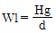
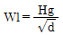
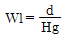
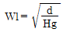
(정답률: 82%)
42. 0℃, 101.325kPa의 압력에서 건조한 도시가스 1m3 당 황화수소는 몇 g을 초과할 수 없는가?
- 0.02g
- 0.1g
- 0.2g
- 0.5g
(정답률: 45%)
43. 펌프의 유량 Q[m3/min], 전양정 H[m], 액체의 비중량이 γ[㎏/m3]일 때 펌프의 수동력 Lw[PS]를 구하는 식은?
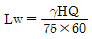
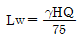
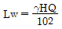
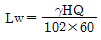
(정답률: 59%)
44. LP가스의 일반적 특성에 대한 설명으로 틀린 것은?
- 증발잠열이 크다.
- 물에 대한 용해성이 크다.
- LP 가스는 공기보다 무겁다.
- 액상의 LP가스는 물보다 가볍다.
(정답률: 53%)
45. LP가스 충전설비 중 압축기를 이용하는 방법의 특징이 아닌 것은?
- 잔류가스 회수가 가능하다.
- 베이퍼록 현상 우려가 있다.
- 펌프에 비해 충전시간이 짧다.
- 압축기 오일이 탱크에 들어가 드레인의 원인이 된다.
(정답률: 48%)
46. 스테인리스강을 조직학적으로 구분하였을 때 이에 속하지 않는 것은?
- 오스테나이트계
- 보크사이트계
- 페라이트계
- 마텐자이트계
(정답률: 62%)
47. 공기액화분리장치에서 복정류탑의 중간에 있는 응축기의 작용은?
- 하부통에 대해서는 분류기(分溜器), 상부통에 대해서는 증발기로 작용
- 하부통에 대해서는 증발기, 상부통에 대해서는 분류기(分溜器)로 작용
- 상, 하부통에 대해서 모두 증발기로 작용
- 상, 하부통에 대해서 모두 분류기(分溜器)로 작용
(정답률: 66%)
48. 다음 [그림]은 가정용 LP가스 소비시설이다. R1에 사용되는 조정기의 종류는?
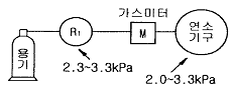
- 1단감압식 저압조정기
- 1단감압식 중압조정기
- 1단감압식 고압조정기
- 2단감압식 저압조정기
(정답률: 65%)
49. 나프타의 사이클릭(cyclic)식 접촉분해법에서 주로 사용되는 촉매는?
- Fe 계 촉매
- Cr 계 촉매
- Ni 계 촉매
- V 계 촉매
(정답률: 69%)
50. 발열량이 5000kcal/Nm3, 비중이 0.61, 공급표준압력이 100㎜H2O인 가스에서 발열량 11000kcal/Nm3, 비중 0.66 공급표준압력이 200㎜H2O인 LNG로 변경할 경우 노즐 변경율은 얼마인가?
- 0.49
- 0.58
- 0.71
- 0.82
(정답률: 46%)
51. 차단성능이 좋고 유량조정이 용이하나 압력손실이 커서 고압의 대구경 밸브에는 부적당한 밸브는?
- 플러그 밸브
- 게이트 밸브
- 글로우브 밸브
- 버터플라이 밸브
(정답률: 59%)
52. 내용적이 48m3인 LPG저장탱크에 부탄 18톤을 충전한다면 저장탱크 내의 액체 부탄의 용적은 상용의 온도에서 저장탱크 내용적의 약 몇 %가 되겠는가? (단, 저장탱크의 상온온도에 있어서의 액체 부탄의 비중은 0.55로 한다.)
- 68
- 77
- 86
- 90
(정답률: 48%)
53. 부피가 50L인 용기에 산소가스가 150atm으로 충전되어 있다면 충전된 가스의 질량은 약 몇 ㎏인가? (단, 온도는 0℃이다.)
- 6.4
- 8.6
- 10.7
- 12.5
(정답률: 44%)
54. 다음 [그림]과 같은 공기액화분리장치는 무엇인가?
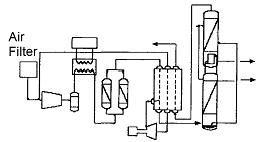
- 압축기에서 압축된 가스가 열교환기로 들어가 팽창기에서 일을 하면서 단열 팽창하여 가스를 액화시키는 캐스케이드식 공기액화분리장치이다.
- 증기압축기 냉동사이클에서 다원냉동 사이클과 같이 비등점이 낮은 냉매를 사용하여 낮은 비등점의 기체를 액화시키는 린데식 공기액화분리장치이다.
- 압축공기가 흡착탑으로 들어가서 흡착제에 대한 가스의 흡착특성에 의해 산소와 질소가 분리·액화시키는 압력변동 흡착식 공기액화분리장치이다.
- 대기 중의 공기를 초전온열교환기로 보내서 액화된 공기를 콜드박스라는 보온장치에서 상평형 원리에 따라 분리하는 심랭식 공기액화 분리장치이다.
(정답률: 41%)
55. 나프타(naphtha)의 접촉분해(수증기 개질)의 원리에 대한 설명으로 틀린 것은?
- 반응 온도를 올리면 CH4 , CO2가 적고 CO, H2가 많이 생성된다.
- 반응 압력을 올리면 CH4 , CO2가 많고 CO, H2가 적게 생성된다.
- 일정온도, 압력에서 수증기비가 증가하면 CH4 , CO가 적고 CO2, H2가 많이 생성된다.
- 저온, 고압, 저수증기로 하면 카본의 생성을 방지 할 수 있다.
(정답률: 49%)
56. 카르노사이클이 27℃ 와 -23℃에서 작동될 때 냉동기의 성적계수(ɛR), 열펌프의 성적계수(ɛH)를 각각 구하면?
- ɛR＝5, ɛH＝7
- ɛR＝7, ɛH＝5
- ɛR＝6, ɛH＝5
- ɛR＝5, ɛH＝6
(정답률: 42%)
57. “철근콘크리트제 방호벽 설치 시 방호벽은 직경 ( )㎜ 이상의 철근을 가로, 세로 ( )㎜ 이하의 간격으로 배근 하여야 한다.” 다음 중 빈칸에 들어갈 알맞은 수치는?
- 5, 300
- 5, 400
- 9, 300
- 9, 400
(정답률: 49%)
58. 가스 액화사이클에 대한 설명으로 틀린 것은?
- 팽창밸브를 통과시켜 저온을 얻는 방식을 주울-톰슨 효과에 의한 방식이라 한다.
- 팽창기에 의해 외부일량을 주지 않고 단열팽창시키는 방식에 의해서도 저온을 얻을 수 있다.
- 린데식 액화장치는 주울-톰슨 효과에 의해 저온을 얻는 방식이다.
- 클라우드식 액화장치는 자유팽창효과에 의해 저온을 얻는 방식이다.
(정답률: 50%)
59. “직류전철이 주행할 때에 누출전류에 의해서 지하 매몰배관에는 전류의 유입지역과 유출지역이 생기며, 이때 ( ⓐ )은(는) 부식이 된다. 이러한 지역은 전철의 운행상태에 따라 계속 변할 수 있으므로 이에 대응하기 위하여 ( ⓑ )의 전기방식을 선정한다.” 다음 중 ( )안에 들어갈 적당한 용어는?
- ⓐ : 유출지역 ⓑ : 배류법
- ⓐ : 유입지역 ⓑ : 배류법
- ⓐ : 유출지역 ⓑ : 외부전원법
- ⓐ : 유입지역 ⓑ : 외부전원법
(정답률: 44%)
60. 펌프에서 발생되는 베이퍼록의 방지방법이 아닌 것은?
- 회전수를 줄인다.
- 펌프의 설치위치를 낮춘다.
- 흡입관의 지름을 크게 한다.
- 실린더 라이너의 외부를 가열한다.
(정답률: 54%)
4과목: 가스안전관리
61. 공정에 존재하는 위험요소들과 공정의 효율을 떨어뜨릴 수 있는 운전상의 문제점을 찾아낼 수 있는 정성적인 위험평가 기법으로 산업체(화학공장)에서 일반적으로 사용되는 것은?
- Check list 법
- FTA 법
- ETA 법
- HAZOP 법
(정답률: 65%)
62. 도시가스용 폴리에틸렌 배관이 도로에 매설되어 있다. 기밀시험 실시시기의 기준으로 옳은 것은?
- 설치 후 15년이 된 해 및 그 이후 5년마다
- 설치 후 15년이 되는 해 및 그 이후 3년마다
- 설치 후 15년이 되는 해 및 그 이후 1년마다
- 설치 후 10년 마다
(정답률: 44%)
63. 최고 충전압력 5MPa, 내경 60㎝의 용접제 원통형 고압설비의 동판의 두께는 최소 몇 ㎜가 되어야 하는가? (단, 재료의 허용응력(S)은 150N/mm2, 용접효율은 0.75, 부식여유는 1㎜로 한다.)
- 10.6
- 12.4
- 14.7
- 22.7
(정답률: 41%)
64. 부피 함량이 각각 C3H8 20%, H2 30%, CH4 50% 혼합가스의 폭발하한계 값은 약 몇 %인가? (단, 폭발하한계는 각각 C3H8 2.4%, H2 4.0%, CH4 5.0%이다.)
- 3.9
- 4.1
- 4.4
- 4.7
(정답률: 48%)
65. 압축가스 100m3 충전용기를 차량에 적재하여 운반할 때 휴대하여야 할 소화설비의 기준으로 옳은 것은?
- BC용, B10 이상 분말소화제를 2개 이상 비치
- B용, B-8 이상 분말소화제를 2개 이상 비치
- ABC용, B-10 이상 포말소화제를 1개 이상 비치
- ABC용, B-8이상 포말소화제를 1개 이상 비치
(정답률: 52%)
66. 가스안전관리전문기관이 가스사고를 방지하기 위하여 장비와 기술을 이용하여 가스공급시설의 잠재된 위험요소와 원인을 찾아내는 것을 무엇이라 하는가?
- 정밀안전진단
- 위해방지조사
- 가스안전영향평가
- 안전성평가
(정답률: 40%)
67. 차량에 고정된 탱크가 후부취출식 탱크인 경우에는 탱크주밸브 및 긴급차단장치에 속하는 밸브와 차량의 뒷범퍼와의 수평거리를 몇 ㎝ 이상 이격하여야 하는가?
- 30
- 40
- 60
- 100
(정답률: 48%)
68. 고압가스 충전용기 운반 시 동일차량에 적재 운반할 수 있는 것은?
- 염소와 아세틸렌
- 염소와 암모니아
- 염소와 질소
- 염소와 수소
(정답률: 53%)
69. 지식경제부령으로 정하는 고압가스 관련 설비가 아닌 것은?
- 안전밸브
- 세척설비
- 기화장치
- 독성가스배관용 밸브
(정답률: 69%)
70. 특정고압가스사용시설에서 사용되는 경보기의 정밀도는 설정치에 대하여 독성가스용은 얼마 이하이어야 하는가?
- ±1%
- ±5%
- ±25%
- ±30%
(정답률: 49%)
71. 위험장소를 구분할 때 2종장소가 아닌 것은?
- 밀폐된 용기 또는 설비 내에 밀봉된 가연성가스가 그 용기 또는 설비의 사고로 인해 파손되거나 오조작의 경우에만 누출할 위험이 있는 장소
- 확실한 기계적 환기조치에 의하여 가연성가스가 체류하지 않도록 되어 있으나 환기장치에 이상이나 사고가 발생한 경우에는 가연성가스가 체류하여 위험하게 될 우려가 있는 장소
- 상용상태에서 가연성가스가 체류하여 위험하게 될 우려가 있는 장소
- 1종장소의 주변 또는 인접한 실내에서 위험한 농도의 가연성가스가 종종 침입할 우려가 있는 장소
(정답률: 65%)
72. 고압가스안전관리법시행규칙에서 사용하는 용어의 정의로서 틀린 것은?
- “액화가스”라 함은 가압·냉각 등의 방법에 의하여 액체상태로 되어있는 것으로서 대기압에서의 끓는점이 섭씨 40도 이하 또는 상용온도 이하인 것을 말한다.
- “방호벽”이라 함은 높이 5미터 이상, 두께 10센티미터 이상의 철근콘크리트 또는 이와 동등 이상의 강도를 가지는 벽을 말한다.
- “이음매 없는 용기”라 함은 동판 및 경판을 일체로 성형하여 이음매 없이 제조한 용기를 말한다.
- “접합 또는 납불임 용기”라 함은 동판 및 경판을 각각 성형하여 심(seam)용접 그 밖의 방법으로 접합하거나 납붙임하여 만든 내용적 1리터 이하인 1회용 용기이다.
(정답률: 57%)
73. 아세틸렌제조시설에서 고압건조기와 충전용 교체밸브사이의 배관에는 어떤 안전장치를 설치하여야 하는가?
- 경보장치
- 긴급차단장치
- 역화방지장치
- 역류방지장치
(정답률: 61%)
74. 다음 중 가연성가스이면서 독성가스에 해당되지 않는 것은?
- 아크릴로니트릴
- 산화에틸렌
- 시안화수소
- 아세틸렌
(정답률: 52%)
75. LPG 저장탱크를 지하에 설치하는 기준으로 틀린 것은?
- 저장탱크는 지하 저장탱크실에 설치한다.
- 저장탱크실은 방수조치를 한다.
- 저장탱크실의 바닥은 침입한 물이 고이지 않도록 편평한 구조로 한다.
- 저장탱크를 2개 이상 인접하여 설치하는 경우에는 상호간에 1m 이상의 거리를 유지한다.
(정답률: 52%)
76. “초저온용기의 충격시험은 3개의 시험편 온도를 섭씨( )℃ 이하로 하여 그 충격치의 최저가 ( )J/cm2 이상이고 평균 ( )J/cm2 이상의 경우를 합격으로 한다.” 다음 중 ( )안에 들어갈 알맞은 수치는?
- 100, 30, 20
- -100, 20, 30
- 150, 30, 20
- -150, 20, 30
(정답률: 62%)
77. 저장탱크 및 처리설비를 지하에 설치하는 경우 저장탱크에 설치한 안전밸브는 지상에서 몇 m 이상의 높이에 방출구가 있는 가스방출관을 설치하여야 하는가?
- 1
- 2
- 3
- 5
(정답률: 50%)
78. 도시가스 정압기에 설치되는 압력조정기를 출구압력에 따라 구분할 경우의 기준으로 틀린 것은?
- 고압 : 1MPa 이상
- 중압 : 0.1~1MPa 미만
- 준저압 : 4~100kPa 미만
- 저압 : 1~4kPa 미만
(정답률: 55%)
79. 독성가스 배관을 2중관으로 하여야 하는 독성가스가 아닌 것은?
- 포스겐
- 염소
- 브롬화메탄
- 염화메탄
(정답률: 62%)
80. 지중 또는 수중에 설치된 양극금속과 매설배관을 전선으로 연결해 양극금속과 매설 배관사이의 전지작용에 의한 전기적 방식 방법은?
- 대류법
- 배류법
- 희생양극법
- 외부전원법
(정답률: 59%)
5과목: 가스계측기기
81. 독립내기형 다이어프램식 가스미터의 구조를 가장 옳게 설명한 것은?
- 가스미터 몸체와 그 내부에 다이어프램을 내장한계량실이 분리된 구조이다.
- 가스미터 몸체와 그 내부에 다이어프램을 내장한계량실이 일치된 구조이다.
- 가스미터 몸체에 다이어프램을 내장한 구조이다.
- 가스미터 몸체에 독립된 다이어프램을 내장한 계량실이 설치된 구조이다.
(정답률: 44%)
82. 열기전력이 작으며, 산화 분위기에 강하나 환원 분위기에는 약하고, 고온 측정에 적당한 열전대 온도계의 단자구성으로 옳은 것은?
- 양극 : 철, 음극 : 콘스탄탄
- 양극 : 구리, 음극 : 콘스탄탄
- 양극 : 크로멜, 음극 : 알루멜
- 양극 : 백금-로듐, 음극 : 백금
(정답률: 65%)
83. 가스크로마토그래피 분석기에서 FID(Flame Ionization Detector)검출기의 특성에 대한 설명으로 옳은 것은?
- 시료를 파괴하지 않는다.
- 대상 감도는 탄소수에 반비례한다.
- 미량의 탄화수소를 검출할 수 있다.
- 연소성 기체에 대하여 감응하지 않는다.
(정답률: 62%)
84. 4실로 나누어진 습식가스미터의 드럼이 10회전 했을 때 통과유량이 100L 이었다면 각 실의 용량은 얼마인가?
- 1L
- 2.5L
- 10L
- 25L
(정답률: 62%)
85. 적외선분광분석법에 대한 설명으로 틀린 것은?
- 적외선을 흡수하기 위해서는 쌍극자모멘트의 알짜 변화를 일으켜야 한다.
- H2, O2, N2, Cl2, 등의 2원자 분자는 적외선을 흡수하지 않으므로 분석이 불가능하다.
- 미량성분의 분석에는 셀(Cell) 내에서 다중 반사되는 기체 셀을 사용한다.
- 흡광계수는 셀압력과는 무관하다.
(정답률: 64%)
86. 다음 중 반도체용 초고순도 분위기 가스 중의 초미량 수분함량을 측정하는 분석기기로서 가장 낮은 농도의 측정에 사용되는 것은?
- P2O5 celltype 수분계
- 적외선 분광분석계(FT-IR)
- 대기압 이온화질량분석계(APIMS)
- 광학식 노점계(chilled mirror type hygrometer)
(정답률: 36%)
87. 기준 가스미터의 기준기 검정 유효기간은 몇 년인가?
- 1년
- 2년
- 3년
- 5년
(정답률: 50%)
88. 20℃에서 어떤 액체의 밀도를 측정하였다. 측정용기의 무게가 11.6125g, 증류수를 채웠을 때가 13.1682g, 시료용액을 채웠을 때가 12.8749g이라면 이 시료액체의 밀도는 몇 g/cm3인가? (단, 20℃에서 물의 밀도는 0.99823g/cm3이다.)
- 0.791
- 0.801
- 0.810
- 0.820
(정답률: 23%)
89. 물리적 가스분석계 중 가스의 상자성(常磁性)체에 있어서 자장에 대해 흡인되는 성질을 이용한 것은?
- SO2가스계
- O2가스계
- CO2가스계
- 가스크로마토그래피
(정답률: 53%)
90. 기준기로서 150m3/h로 측정된 유량은 기차가 4%인 가스미터를 사용하면 지시량은 몇 m3/h를 나타내는가?
- 143.75
- 144.00
- 156.00
- 156.25
(정답률: 56%)
91. 섭씨온도 25℃는 몇 ˚R인가?
- 77
- 298
- 485
- 537
(정답률: 60%)
92. 요구되는 입력조건이 만족되면 그에 상응하는 출력신호가 발생되는 형태를 요구하는 것으로 입출력이 1 : 1 대응관계에 있는 시스템은 어떤 제어인가?
- 파일럿제어
- 메모리제어
- 조합제어
- 시퀀스제어
(정답률: 54%)
93. 배기가스 중 이산화탄소를 정량분석하고자 할 때 가장 적당한 방법은?
- 적정법
- 완만연소법
- 중량법
- 오르자트법
(정답률: 65%)
94. 막식가스미터의 부동현상에 대한 설명으로 옳은 것은?
- 가스가 누설되고 있는 고장이다.
- 가스가 미터를 통과하지 못하는 고장이다.
- 가스가 미터를 통과하지만 지침이 움직이지 않는 고장이다.
- 가스가 통과될 때 미터가 이상음을 내는 고장이다.
(정답률: 52%)
95. 헴펠식 가스분석법에서 흡수분리 되지 않는 성분은?
- 이산화탄소
- 수소
- 중탄화수소
- 산소
(정답률: 52%)
96. 휴대용으로 사용되며 상온에서 비교적 정도가 좋으나 물이 필요한 습도계는?
- 모발 습도계
- 광전관식 노점계
- 통풍형 건습구 습도계
- 저항온도계식 건습구 습도계
(정답률: 50%)
97. 광고온계의 특징에 대한 설명으로 틀린 것은?
- 접촉식으로는 가장 정확하다.
- 약 3000℃까지 측정이 가능하다.
- 방사온도계에 비해 방사율에 의한 보정량이 적다.
- 측정 시 사람의 손이 필요하므로 개인오차가 발생하다.
(정답률: 47%)
98. 다음 유량계 중 압력손실이 큰 것부터 순서대로 나열한 것은?
- 플로노즐 > 오리피스 > 벤투리
- 오리피스 > 플로노즐 > 벤투리
- 오리피스 > 벤투리 > 플로노즐
- 벤투리 > 플로노즐 > 오리피스
(정답률: 49%)
99. 피스톤형 게이지로서 다른 압력계의 교정 또는 검정용표준기로 사용되는 압력계는?
- 부르돈관식 압력계
- 벨로우즈식 압력계
- 다이어프램식 압력계
- 분동식 압력계
(정답률: 41%)
100. 다음 중 전기적 변환방식에 해당하지 않는 것은?
- 저항변화를 이용
- 렌즈 및 거울을 이용
- 압전기의 변환을 이용
- 콘덴서의 용량변화를 이용
(정답률: 69%)